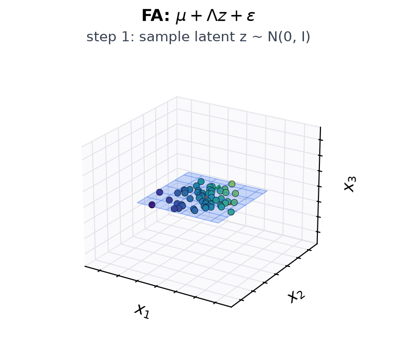
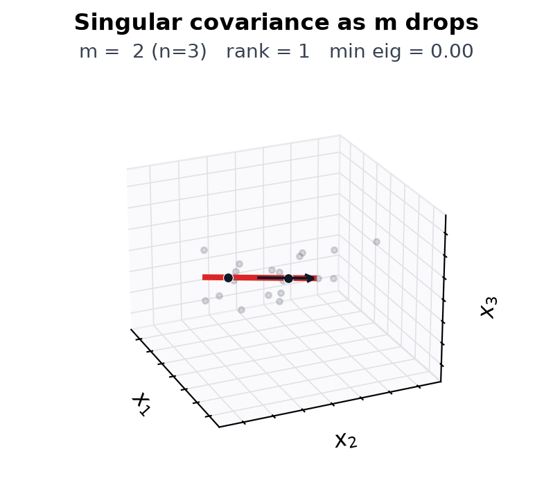
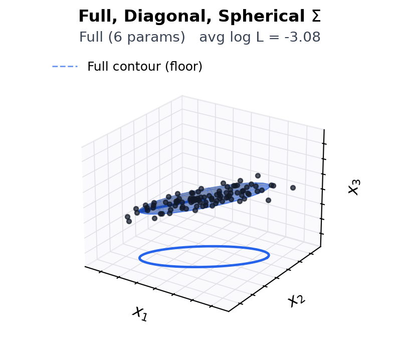
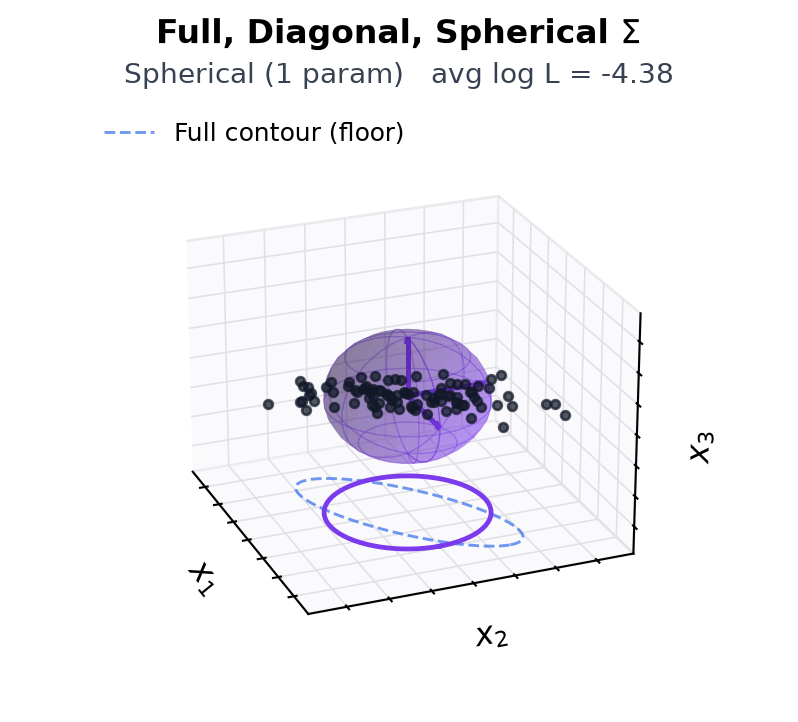
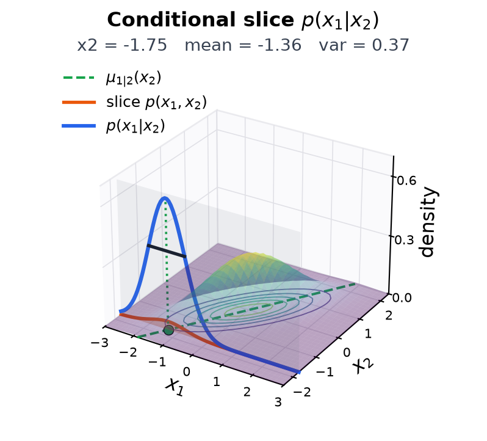
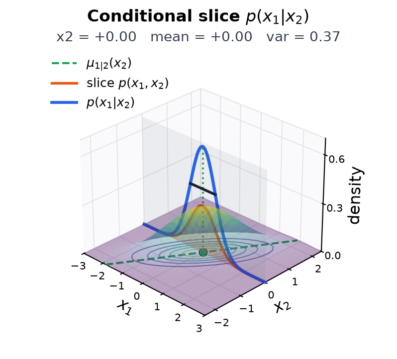
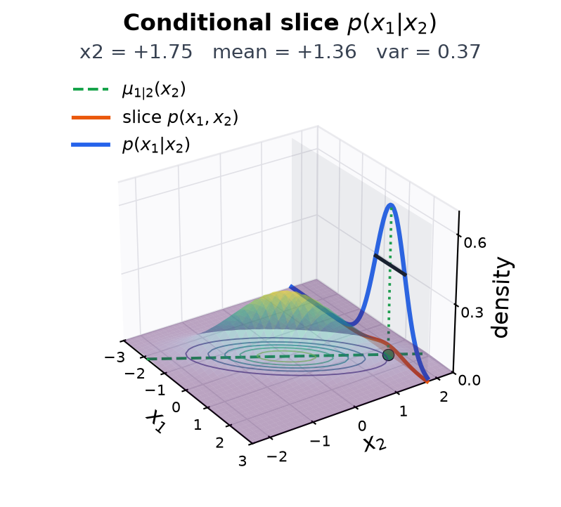
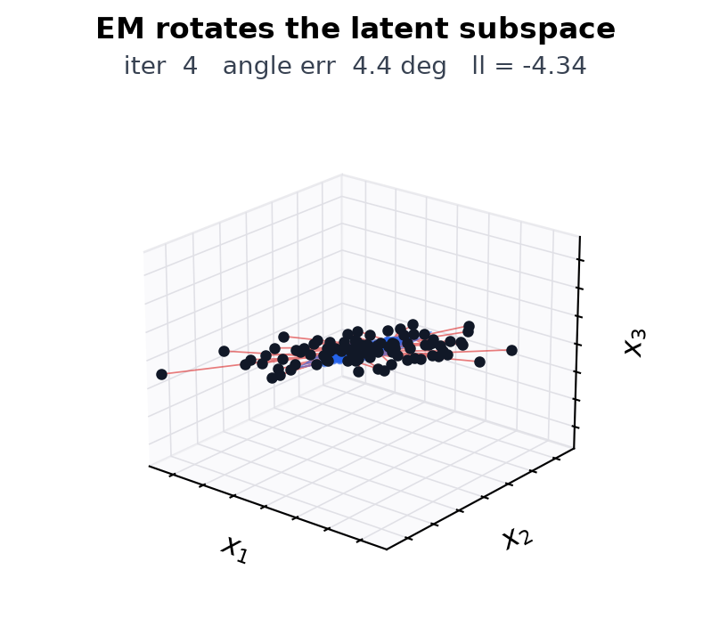
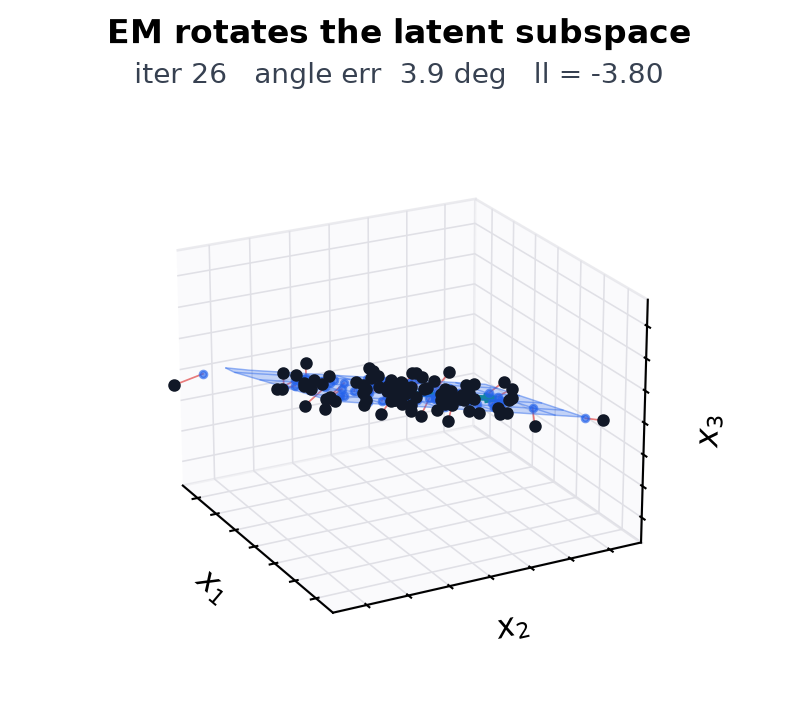

Factor Analysis
Theory
इस lecture में: High-dimensional data (\(n \gg m\)) में singular sample covariance की समस्या, diagonal और spherical covariance restrictions, Multivariate Gaussian के partitioned marginals और conditionals, Factor Analysis का generative model \(x = \mu + \Lambda z + \epsilon\), \((z, x)\) का joint distribution और \(x\) का marginal \(\mathcal{N}(\mu, \Lambda\Lambda^T + \Psi)\), और EM algorithm के E-step तथा M-step का पूरा derivation।
1. एक line में idea
पिछले lecture में आपने देखा कि Mixture of Gaussians और EM बिना labels के data में clusters ढूँढ सकते हैं। पर जब features की संख्या \(n\) हमारे training examples \(m\) से बड़ी हो (\(n \gg m\), या यहाँ तक कि \(m \le n\)), तो एक अकेला Multivariate Gaussian भी fit नहीं हो पाता: sample covariance matrix \(\Sigma\) singular (non-invertible) हो जाता है। अगर हम \(\Sigma\) को जबरदस्ती diagonal या spherical मान लें, तो matrix invertible तो हो जाता है पर features के बीच सारे correlations खत्म हो जाते हैं।
Factor Analysis इन दोनों अतियों के बीच का रास्ता है। हम मान लेते हैं कि हर high-dimensional example \(x \in \mathbb{R}^n\) असल में एक छोटे छिपे हुए (latent) vector \(z \in \mathbb{R}^k\) (\(k \ll n\)) से बना है: पहले \(z\) को \(\Lambda\) से गुणा करके एक \(k\)-dimensional subspace पर ले जाया जाता है, और फिर हर coordinate में अलग-अलग independent Gaussian noise \(\epsilon\) जुड़ता है। इससे \(\Sigma = \Lambda\Lambda^T + \Psi\) बनता है, जो कम parameters में मुख्य correlations भी पकड़ लेता है और हमेशा invertible भी रहता है।
2. Setup और Notation
| Symbol | मतलब |
|---|---|
| \(\{x^{(1)}, \dots, x^{(m)}\}\) | unlabeled training set, हर \(x^{(i)} \in \mathbb{R}^n\) |
| \(m, n\) | examples की संख्या (\(m\)) और observed features की संख्या (\(n\)) |
| \(k\) | latent factors की संख्या, जहाँ \(k < n\) (अक्सर \(k \ll n\)) |
| \(z^{(i)} \in \mathbb{R}^k\) | \(i\)-वें example का छिपा हुआ latent vector, \(z^{(i)} \sim \mathcal{N}(0, I)\) |
| \(\mu \in \mathbb{R}^n\) | \(x\) का mean vector |
| \(\Lambda \in \mathbb{R}^{n \times k}\) | factor loading matrix, जिसके columns latent subspace तय करते हैं |
| \(\epsilon \in \mathbb{R}^n\) | coordinate-wise independent noise, \(\epsilon \sim \mathcal{N}(0, \Psi)\) |
| \(\Psi \in \mathbb{R}^{n \times n}\) | diagonal noise covariance matrix, \(\Psi = \mathrm{diag}(\psi_1, \dots, \psi_n)\), \(\psi_j > 0\) |
| \(\mu_{z^{(i)}|x^{(i)}}, \Sigma_{z^{(i)}|x^{(i)}}\) | \(z^{(i)} \mid x^{(i)}\) के posterior Gaussian का mean और covariance |
3. जब \(n \gg m\) हो: Singular Covariance और साधारण इलाज
मान लीजिए आप किसी बीमारी के study में \(m = 20\) मरीज़ों का data इकट्ठा करते हैं, पर हर मरीज़ के \(n = 3000\) gene expression features नापे गए हैं। यहाँ \(n \gg m\) है। अगर आप इस data पर एक साधारण Gaussian \(\mathcal{N}(\mu, \Sigma)\) को Maximum Likelihood से fit करें, तो formulas ये हैं:
\[\mu = \frac{1}{m} \sum_{i=1}^{m} x^{(i)}, \qquad \Sigma = \frac{1}{m} \sum_{i=1}^{m} (x^{(i)} - \mu)(x^{(i)} - \mu)^T\]
यहाँ एक बड़ी गणितीय अड़चन है। हर outer product \((x^{(i)} - \mu)(x^{(i)} - \mu)^T\) की rank ज़्यादा से ज़्यादा \(1\) होती है। साथ ही सभी centered vectors का जोड़ \(\sum_{i=1}^{m} (x^{(i)} - \mu) = 0\) होता है, इसलिए उनमें से कम से कम एक vector बाकी \(m - 1\) vectors पर निर्भर है। नतीजा यह है कि:
\[\mathrm{rank}(\Sigma) \le \min(n, m - 1)\]
जब भी \(m \le n\) हो, \(\mathrm{rank}(\Sigma) < n\) होगी। यानी \(\Sigma\) singular होगा: उसका determinant \(|\Sigma| = 0\) होगा, कम से कम \(n - m + 1\) eigenvalues शून्य होंगे, और \(\Sigma^{-1}\) मौजूद ही नहीं होगा। Gaussian की density याद कीजिए:
\[p(x; \mu, \Sigma) = \frac{1}{(2\pi)^{n/2} |\Sigma|^{1/2}} \exp\!\left( -\frac{1}{2}(x - \mu)^T \Sigma^{-1}(x - \mu) \right)\]
इसमें \(|\Sigma|^{-1/2}\) और \(\Sigma^{-1}\) दोनों चाहिए, इसलिए model पूरी तरह टूट जाता है। Geometric नज़रिए से सोचें: \(\mathbb{R}^3\) में सिर्फ़ \(m = 3\) बिंदु हमेशा एक समतल (2D plane) में आ जाते हैं, और \(m = 2\) बिंदु एक सीधी रेखा (1D line) पर। उस plane या line के बाहर वाली दिशा में sample variance ठीक \(0\) दिखती है, इसलिए Gaussian का ellipsoid पिचककर चपटा हो जाता है।
दो सरल restrictions: Diagonal और Spherical \(\Sigma\)
जब तक हम \(\frac{n(n+1)}{2}\) स्वतंत्र entries वाले पूरे \(\Sigma\) को कम data से सीखने की कोशिश करेंगे, यह दिक्कत रहेगी। दो सीधे तरीके अक्सर आज़माए जाते हैं:
- Diagonal covariance: हम मान लेते हैं कि सभी off-diagonal entries शून्य हैं (\(\Sigma_{jk} = 0\) जब \(j \neq k\))। तब Maximum Likelihood से हर diagonal entry बस उस अकेले feature की sample variance होती है:
\[\Sigma_{jj} = \frac{1}{m} \sum_{i=1}^{m} \left(x_j^{(i)} - \mu_j\right)^2\]
इसमें सिर्फ़ \(n\) variance parameters हैं। जैसे ही हर feature में थोड़ा भी बदलाव हो (\(\Sigma_{jj} > 0\)), \(\Sigma\) तुरंत invertible हो जाता है, चाहे \(m = 2\) ही क्यों न हो। पर कीमत बड़ी है: diagonal \(\Sigma\) मान लेता है कि सारे features आपस में independent हैं। इसके density contours हमेशा coordinate axes के समानांतर (axis-aligned) ellipsoids होते हैं, तिरछे नहीं हो सकते।
- Spherical covariance: और भी सख़्त शर्त लगाएँ कि \(\Sigma = \sigma^2 I\)। अब पूरे covariance में सिर्फ़ \(1\) parameter \(\sigma^2\) बचता है:
\[\sigma^2 = \frac{1}{mn} \sum_{i=1}^{m} \|x^{(i)} - \mu\|^2\]
इसके contours गोल गोले (spheres) होते हैं। यह न सिर्फ़ correlations छोड़ देता है, बल्कि हर feature की variance को भी बराबर मान लेता है।
| Covariance Model | Parameters की संख्या | Correlations पकड़ता है? | \(m \le n\) पर invertible? |
|---|---|---|---|
| Full \(\Sigma\) | \(n(n+1)/2\) | हाँ (सारे) | नहीं (\(\mathrm{rank} \le m-1\)) |
| Diagonal \(\Sigma\) | \(n\) | नहीं | हाँ (यदि हर \(\Sigma_{jj} > 0\)) |
| Spherical \(\sigma^2 I\) | \(1\) | नहीं | हाँ (यदि \(\sigma^2 > 0\)) |
| Factor Analysis \(\Lambda\Lambda^T + \Psi\) | \(nk + n\) | हाँ (\(k\) मुख्य दिशाएँ) | हाँ (यदि हर \(\psi_j > 0\)) |
Factor Analysis हमें diagonal और full के बीच का सटीक संतुलन देता है। उसे समझने से पहले हमें Multivariate Gaussian के दो बुनियादी नियम चाहिए।
4. Multivariate Gaussian के Marginals और Conditionals
मान लीजिए vector \(x \in \mathbb{R}^{r+s}\) को दो हिस्सों में बाँटा गया है, \(x_1 \in \mathbb{R}^r\) और \(x_2 \in \mathbb{R}^s\), और इनका joint distribution Gaussian है:
\[x = \begin{bmatrix} x_1 \\ x_2 \end{bmatrix} \sim \mathcal{N}(\mu, \Sigma), \qquad \mu = \begin{bmatrix} \mu_1 \\ \mu_2 \end{bmatrix}, \qquad \Sigma = \begin{bmatrix} \Sigma_{11} & \Sigma_{12} \\ \Sigma_{21} & \Sigma_{22} \end{bmatrix}\]
यहाँ \(\mu_1 \in \mathbb{R}^r\), \(\mu_2 \in \mathbb{R}^s\), \(\Sigma_{11} \in \mathbb{R}^{r \times r}\), \(\Sigma_{22} \in \mathbb{R}^{s \times s}\), और covariance की symmetry से \(\Sigma_{21} = \Sigma_{12}^T\) है।
Marginal distribution
अगर हमें \(x_2\) की परवाह न हो और सिर्फ़ \(x_1\) का marginal distribution चाहिए (\(p(x_1) = \int p(x_1, x_2)\,dx_2\)), तो Gaussian में यह पढ़ना बेहद आसान है। बस उसी हिस्से का mean और covariance block उठा लें:
\[x_1 \sim \mathcal{N}(\mu_1, \Sigma_{11}), \qquad x_2 \sim \mathcal{N}(\mu_2, \Sigma_{22})\]
Conditional distribution
अगर \(x_2\) की value दिख गई है, तो \(x_1 \mid x_2\) का distribution भी Gaussian ही रहता है:
\[x_1 \mid x_2 \sim \mathcal{N}(\mu_{1|2}, \Sigma_{1|2})\]
जहाँ conditional mean और conditional covariance के partitioned formulas ये हैं:
\[\mu_{1|2} = \mu_1 + \Sigma_{12}\Sigma_{22}^{-1}(x_2 - \mu_2), \qquad \Sigma_{1|2} = \Sigma_{11} - \Sigma_{12}\Sigma_{22}^{-1}\Sigma_{21}\]
इन दोनों सूत्रों का सहज मतलब ज़रूर ध्यान में रखें:
- \(\mu_{1|2}\) में linear shift: अगर \(\Sigma_{12} = 0\) हो (कोई correlation नहीं), तो \(x_2\) जानने से कोई फ़र्क़ नहीं पड़ता और \(\mu_{1|2} = \mu_1\) रहता है। पर अगर \(x_1\) और \(x_2\) correlated हैं, तो जैसे-जैसे \(x_2\) अपने mean \(\mu_2\) से दूर जाता है, \(\mu_{1|2}\) भी \((x_2 - \mu_2)\) के साथ सीधी रेखा में खिसकता है।
- \(\Sigma_{1|2}\) में घटी हुई अनिश्चितता: ध्यान दें कि \(\Sigma_{1|2}\) के सूत्र में \(x_2\) कहीं नहीं आता! यानी \(x_2\) की कोई भी value दिखे, conditional bell की चौड़ाई एक जैसी रहती है, और चूँकि \(\Sigma_{12}\Sigma_{22}^{-1}\Sigma_{21}\) positive semi-definite है, \(x_2\) को जानने के बाद \(x_1\) की अनिश्चितता पहले (\(\Sigma_{11}\)) से कम हो जाती है।
5. Factor Analysis Model
Factor Analysis मानता है कि हर observed point \(x^{(i)} \in \mathbb{R}^n\) तीन चरणों की इस कहानी से पैदा हुआ है:
\[z \sim \mathcal{N}(0, I), \qquad x \mid z \sim \mathcal{N}(\mu + \Lambda z, \Psi)\]
इसे हम समतुल्य रूप से इस समीकरण से लिख सकते हैं:
\[x = \mu + \Lambda z + \epsilon, \qquad \epsilon \sim \mathcal{N}(0, \Psi)\]
जहाँ \(z \in \mathbb{R}^k\) और \(\epsilon \in \mathbb{R}^n\) आपस में independent हैं, \(\Lambda \in \mathbb{R}^{n \times k}\) factor loading matrix है, और \(\Psi = \mathrm{diag}(\psi_1, \dots, \psi_n)\) एक diagonal matrix है।
Geometric चित्र (\(n = 3, k = 2\) के लिए सोचें):
- सबसे पहले \(\mathbb{R}^2\) के एक समतल कागज़ पर मानक Gaussian \(\mathcal{N}(0, I)\) से कुछ बिंदु \(z^{(i)}\) चुनें।
- अब \(\mu + \Lambda z^{(i)}\) की गणना करें। Matrix \(\Lambda \in \mathbb{R}^{3 \times 2}\) उस 2D कागज़ को खींचकर, घुमाकर और \(\mu\) पर खिसकाकर \(\mathbb{R}^3\) के अंदर एक तिरछे 2D समतल (affine subspace) में रख देता है। अभी सारे बिंदु ठीक उसी पतली चादर पर चिपके हैं।
- अंत में हर बिंदु में noise \(\epsilon^{(i)} \sim \mathcal{N}(0, \Psi)\) जोड़ें। यह बिंदुओं को उस 2D चादर से थोड़ा ऊपर-नीचे और दाएँ-बाएँ धकेल देता है, जिससे \(\mathbb{R}^3\) में एक चपटा बादल (pancake जैसा point cloud) बन जाता है।
चूँकि \(\Psi\) diagonal है, अलग-अलग features के बीच जो भी साझा correlation है वह पूरी तरह साझा latent factors \(z\) और matrix \(\Lambda\) से आता है, जबकि हर feature का अपना अलग निजी शोर \(\psi_j\) सँभालता है।
6. \((z, x)\) का Joint Distribution और \(x\) का Marginal
हमें \(x\) का marginal distribution और \(z \mid x\) का posterior दोनों चाहिए। सबसे साफ़ रास्ता यह है कि हम पहले संयुक्त vector \(\begin{bmatrix} z \\ x \end{bmatrix} \in \mathbb{R}^{k+n}\) का joint distribution निकाल लें। चूँकि \(z\) और \(\epsilon\) स्वतंत्र Gaussians हैं और \(x = \mu + \Lambda z + \epsilon\) उनका एक linear (affine) संयोजन है, \((z, x)\) मिलकर jointly Gaussian होंगे। बस हमें उनका संयुक्त mean और चारों covariance blocks निकालने हैं।
Mean vector: \(E[z] = 0\) है, और linearity of expectation से:
\[E[x] = E[\mu + \Lambda z + \epsilon] = \mu + \Lambda E[z] + E[\epsilon] = \mu\]
Covariance blocks: परिभाषा से \(\mathrm{Cov}(u, v) = E[(u - E[u])(v - E[v])^T]\)।
- Top-left block (\(\Sigma_{zz}\)): चूँकि \(z \sim \mathcal{N}(0, I)\), सीधे \(\Sigma_{zz} = E[zz^T] = I\)।
- Cross-covariance block (\(\Sigma_{zx}\)): \(x - E[x] = \Lambda z + \epsilon\) रखें। चूँकि \(z\) और \(\epsilon\) independent हैं, \(E[z\epsilon^T] = E[z]E[\epsilon]^T = 0\):
\[\Sigma_{zx} = E\!\left[(z - E[z])(x - E[x])^T\right] = E\!\left[z(\Lambda z + \epsilon)^T\right] = E[zz^T]\Lambda^T + E[z\epsilon^T] = I\Lambda^T + 0 = \Lambda^T\]
Symmetry से bottom-left block \(\Sigma_{xz} = \Sigma_{zx}^T = \Lambda\) होगा।
- Bottom-right block (\(\Sigma_{xx}\)): ठीक उसी तरह expand करें और \(E[z\epsilon^T] = 0, E[\epsilon z^T] = 0\) का उपयोग करें:
\[\begin{aligned} \Sigma_{xx} &= E\!\left[(x - \mu)(x - \mu)^T\right] = E\!\left[(\Lambda z + \epsilon)(\Lambda z + \epsilon)^T\right] \\ &= \Lambda E[zz^T]\Lambda^T + \Lambda E[z\epsilon^T] + E[\epsilon z^T]\Lambda^T + E[\epsilon\epsilon^T] \\ &= \Lambda I \Lambda^T + 0 + 0 + \Psi = \Lambda\Lambda^T + \Psi \end{aligned}\]
इन चारों टुकड़ों को एक साथ रखने पर \((z, x)\) का पूरा joint distribution मिल जाता है:
\[\begin{bmatrix} z \\ x \end{bmatrix} \sim \mathcal{N}\!\left( \begin{bmatrix} 0 \\ \mu \end{bmatrix}, \begin{bmatrix} I & \Lambda^T \\ \Lambda & \Lambda\Lambda^T + \Psi \end{bmatrix} \right)\]
अब Section 4 के marginal नियम से नीचे वाला block पढ़ते ही \(x\) का marginal distribution तुरंत सामने आ जाता है:
\[x \sim \mathcal{N}(\mu, \Lambda\Lambda^T + \Psi)\]
ज़रा \(\Sigma = \Lambda\Lambda^T + \Psi\) की बनावट देखिए: \(\Lambda\Lambda^T\) एक rank-\(k\) symmetric matrix है जो सिर्फ़ \(nk\) संख्याओं से पूरे \(n \times n\) matrix में off-diagonal correlations भर देता है, और इसमें जुड़ा धनात्मक diagonal \(\Psi\) यह पक्का करता है कि हर दिशा में variance शून्य से ऊपर रहे (यानी \(\Sigma\) हमेशा strictly positive definite और invertible रहे, चाहे \(m < n\) ही क्यों न हो)।
हमारे parameters \(\theta = (\mu, \Lambda, \Psi)\) के लिए पूरे training data का log-likelihood यह है:
\[\ell(\mu, \Lambda, \Psi) = \sum_{i=1}^{m} \log \frac{1}{(2\pi)^{n/2} |\Lambda\Lambda^T + \Psi|^{1/2}} \exp\!\left( -\frac{1}{2}(x^{(i)} - \mu)^T (\Lambda\Lambda^T + \Psi)^{-1} (x^{(i)} - \mu) \right)\]
अगर आप सीधे \(\nabla_\Lambda \ell = 0\) और \(\nabla_\Psi \ell = 0\) हल करने की कोशिश करेंगे, तो determinant और inverse के अंदर \(\Lambda\) और \(\Psi\) इस तरह उलझे हैं कि कोई closed-form उत्तर नहीं मिलता। पर चूँकि \(z^{(i)}\) एक latent variable है, यहाँ हम EM Algorithm लगा सकते हैं!
7. Factor Analysis के लिए EM Algorithm
Lecture 13 के General EM ढाँचे को याद करें। फर्क बस इतना है कि Mixture of Gaussians में \(z^{(i)}\) discrete था (इसलिए जोड़ \(\sum_z\) आता था), जबकि यहाँ \(z^{(i)} \in \mathbb{R}^k\) continuous है, इसलिए जोड़ की जगह integral \(\int dz^{(i)}\) और expectation आते हैं।
E-step का derivation
General EM कहता है कि E-step में हर example \(i\) के लिए \(Q_i(z^{(i)}) := p(z^{(i)} \mid x^{(i)}; \mu, \Lambda, \Psi)\) चुनें। हमने अभी Section 6 में \(\begin{bmatrix} z \\ x \end{bmatrix}\) का joint Gaussian निकाला है! उस पर Section 4 का partitioned conditional सूत्र लगाएँ (\(x_1 = z^{(i)}\) और \(x_2 = x^{(i)}\) रखकर):
\[z^{(i)} \mid x^{(i)}; \mu, \Lambda, \Psi \;\sim\; \mathcal{N}\!\left(\mu_{z^{(i)}|x^{(i)}}, \, \Sigma_{z^{(i)}|x^{(i)}}\right)\]
जहाँ:
\[\mu_{z^{(i)}|x^{(i)}} = \Lambda^T (\Lambda\Lambda^T + \Psi)^{-1} (x^{(i)} - \mu)\]
\[\Sigma_{z^{(i)}|x^{(i)}} = I - \Lambda^T (\Lambda\Lambda^T + \Psi)^{-1} \Lambda\]
यहाँ एक बहुत काम की बात छिपी है: \(\Sigma_{z^{(i)}|x^{(i)}}\) में \(x^{(i)}\) कहीं नहीं आता, यानी सभी \(m\) examples के लिए यह एक ही \(k \times k\) matrix है। E-step में हमें बस यही एक covariance matrix और हर \(i\) के लिए \(k\)-dimensional vector \(\mu_{z^{(i)}|x^{(i)}}\) निकालना होता है।
M-step का derivation और \(E[zz^T]\) की सबसे ज़रूरी सावधानी
M-step में हमें \(Q_i\) को स्थिर रखकर lower bound को \((\mu, \Lambda, \Psi)\) के सापेक्ष maximize करना है:
\[J(Q, \mu, \Lambda, \Psi) = \sum_{i=1}^{m} \int Q_i(z^{(i)}) \log \frac{p(x^{(i)} \mid z^{(i)}; \mu, \Lambda, \Psi)\, p(z^{(i)})}{Q_i(z^{(i)})} \, dz^{(i)}\]
ध्यान दें कि \(p(z^{(i)}) = \mathcal{N}(0, I)\) और \(Q_i(z^{(i)})\) दोनों में \((\mu, \Lambda, \Psi)\) का कोई parameter नहीं है। उन्हें छोड़ दें तो हमें सिर्फ़ यह राशि maximize करनी है:
\[\sum_{i=1}^{m} E_{z^{(i)} \sim Q_i}\!\left[ \log p(x^{(i)} \mid z^{(i)}; \mu, \Lambda, \Psi) \right] = \sum_{i=1}^{m} E_{z^{(i)} \sim Q_i}\!\left[ -\frac{1}{2}\log |\Psi| - \frac{n}{2}\log(2\pi) - \frac{1}{2}(x^{(i)} - \mu - \Lambda z^{(i)})^T \Psi^{-1} (x^{(i)} - \mu - \Lambda z^{(i)}) \right]\]
जब हम इस quadratic पद का expectation लेंगे, तो हमें \(z^{(i)} \sim Q_i\) के तहत दो expectations की ज़रूरत पड़ेगी: एक linear पद \(E[z^{(i)}]\) और दूसरा quadratic पद \(E[z^{(i)} z^{(i)T}]\)। किसी भी random vector \(Y\) के covariance की परिभाषा याद करें: \(\mathrm{Cov}(Y) = E[YY^T] - E[Y]E[Y]^T\), यानी \(E[YY^T] = E[Y]E[Y]^T + \mathrm{Cov}(Y)\)। चूँकि \(Q_i\) एक Gaussian \(\mathcal{N}(\mu_{z^{(i)}|x^{(i)}}, \Sigma_{z^{(i)}|x^{(i)}})\) है:
\[E_{z^{(i)} \sim Q_i}[z^{(i)}] = \mu_{z^{(i)}|x^{(i)}}, \qquad E_{z^{(i)} \sim Q_i}\!\left[z^{(i)} z^{(i)T}\right] = \mu_{z^{(i)}|x^{(i)}} \mu_{z^{(i)}|x^{(i)}T} + \Sigma_{z^{(i)}|x^{(i)}}\]
सावधान: \(E[zz^T]\) और \(E[z]E[z]^T\) बराबर नहीं होते! पीछे वाला \(+\Sigma_{z^{(i)}|x^{(i)}}\) पद छोड़ देना सबसे आम गलती है। इसका सहज कारण यह है कि हमें असली \(z^{(i)}\) पता नहीं है, हमारे पास उसका एक धुँधला posterior अंदाज़ा है जिसकी चौड़ाई \(\Sigma_{z^{(i)}|x^{(i)}}\) है। M-step को इस अनिश्चितता का भी पूरा हिसाब रखना पड़ता है।
अब तीनों parameters के updates एक-एक करके निकालते हैं:
1. \(\mu\) के लिए: ऊपर वाले objective का \(\mu\) के सापेक्ष gradient शून्य रखने पर \(\sum_{i=1}^{m} \Psi^{-1}(x^{(i)} - \mu - \Lambda \mu_{z^{(i)}|x^{(i)}}) = 0\) मिलता है। अगर हम शुरू से ही sample mean चुन लें:
\[\mu := \frac{1}{m} \sum_{i=1}^{m} x^{(i)}\]
तो \(\sum_{i=1}^{m} (x^{(i)} - \mu) = 0\) होने के कारण \(\sum_{i=1}^{m} \mu_{z^{(i)}|x^{(i)}} = 0\) भी अपने आप संतुष्ट हो जाता है। यानी \(\mu\) हमेशा sample mean ही रहता है और हर iteration में बदलता ही नहीं।
2. \(\Lambda\) के लिए: ऊपर वाले objective में से केवल \(\Lambda\) पर निर्भर पदों को अलग करें। Scalar राशि अपने trace के बराबर होती है (\(a^T b = \mathrm{tr}(b a^T)\)) और \(\mathrm{tr}(AB) = \mathrm{tr}(BA)\), इसलिए:
\[\begin{aligned} &\sum_{i=1}^{m} E_{z^{(i)} \sim Q_i}\!\left[ (x^{(i)} - \mu)^T \Psi^{-1} \Lambda z^{(i)} - \frac{1}{2} z^{(i)T} \Lambda^T \Psi^{-1} \Lambda z^{(i)} \right] \\ =\; &\sum_{i=1}^{m} \left( \mathrm{tr}\!\left(\Lambda^T \Psi^{-1}(x^{(i)} - \mu) E_{z^{(i)} \sim Q_i}[z^{(i)}]^T\right) - \frac{1}{2}\mathrm{tr}\!\left(\Lambda^T \Psi^{-1} \Lambda E_{z^{(i)} \sim Q_i}\!\left[z^{(i)} z^{(i)T}\right]\right) \right) \end{aligned}\]
Matrix calculus के मानक नियमों \(\nabla_\Lambda \mathrm{tr}(\Lambda^T B) = B\) और symmetric \(C, D\) के लिए \(\nabla_\Lambda \mathrm{tr}(\Lambda^T C \Lambda D) = 2 C \Lambda D\) से \(\Lambda\) के सापेक्ष gradient को शून्य रखें:
\[\sum_{i=1}^{m} \Psi^{-1}(x^{(i)} - \mu)\mu_{z^{(i)}|x^{(i)}}^T - \Psi^{-1} \Lambda \sum_{i=1}^{m} \left(\mu_{z^{(i)}|x^{(i)}} \mu_{z^{(i)}|x^{(i)}T} + \Sigma_{z^{(i)}|x^{(i)}}\right) = 0\]
बाएँ से \(\Psi\) से गुणा करते ही \(\Psi^{-1}\) कट जाता है, और \(\Lambda\) का M-step सूत्र मिल जाता है:
\[\Lambda := \left( \sum_{i=1}^{m} (x^{(i)} - \mu) \mu_{z^{(i)}|x^{(i)}}^T \right) \left( \sum_{i=1}^{m} \left( \mu_{z^{(i)}|x^{(i)}} \mu_{z^{(i)}|x^{(i)}T} + \Sigma_{z^{(i)}|x^{(i)}} \right) \right)^{-1}\]
ज़रा इसकी शक्ल Linear Regression के Normal Equations से मिलाइए! अगर \(z^{(i)}\) हमें सचमुच दिख रहा होता और हम \((x^{(i)} - \mu) \approx \Lambda z^{(i)}\) fit करते, तो least squares का उत्तर \(\left(\sum_i (x^{(i)}-\mu) z^{(i)T}\right)\left(\sum_i z^{(i)}z^{(i)T}\right)^{-1}\) होता। EM बस अनदेखे \(z^{(i)}\) और \(z^{(i)}z^{(i)T}\) की जगह उनके posterior expectations रख देता है।
3. \(\Psi\) के लिए: नई \(\Lambda\) के साथ expected residual outer product को \(\Phi\) नाम दें:
\[\Phi = \frac{1}{m} \sum_{i=1}^{m} E_{z^{(i)} \sim Q_i}\!\left[ (x^{(i)} - \mu - \Lambda z^{(i)})(x^{(i)} - \mu - \Lambda z^{(i)})^T \right]\]
कोष्ठक खोलकर \(E[z^{(i)}]\) और \(E[z^{(i)} z^{(i)T}]\) के मान रखने पर:
\[\Phi = \frac{1}{m} \sum_{i=1}^{m} \left( (x^{(i)} - \mu)(x^{(i)} - \mu)^T - (x^{(i)} - \mu)\mu_{z^{(i)}|x^{(i)}}^T \Lambda^T - \Lambda \mu_{z^{(i)}|x^{(i)}}(x^{(i)} - \mu)^T + \Lambda\!\left(\mu_{z^{(i)}|x^{(i)}} \mu_{z^{(i)}|x^{(i)}T} + \Sigma_{z^{(i)}|x^{(i)}}\right)\!\Lambda^T \right)\]
चूँकि \(\Psi = \mathrm{diag}(\psi_1, \dots, \psi_n)\) diagonal है, \(\log|\Psi| = \sum_{j=1}^{n} \log \psi_j\) और \(\mathrm{tr}(\Psi^{-1}\Phi) = \sum_{j=1}^{n} \frac{\Phi_{jj}}{\psi_j}\) होगा। इसलिए \(\Psi\) पर निर्भर हिस्सा \(-\frac{m}{2}\sum_{j=1}^{n} \left(\log \psi_j + \frac{\Phi_{jj}}{\psi_j}\right)\) है। हर \(\psi_j\) के सापेक्ष derivative \(-\frac{m}{2}\left(\frac{1}{\psi_j} - \frac{\Phi_{jj}}{\psi_j^2}\right) = 0\) रखने पर सीधे मिलता है:
\[\Psi_{jj} := \Phi_{jj} \qquad (j = 1, \dots, n)\]
यानी हम matrix \(\Phi\) का सिर्फ़ मुख्य diagonal रख लेते हैं और बाकी off-diagonal entries को शून्य कर देते हैं।
पूरा EM Algorithm: एक नज़र में
- Initialize: \(\mu := \frac{1}{m}\sum_{i=1}^{m} x^{(i)}\) तय करें। \(\Lambda \in \mathbb{R}^{n \times k}\) को छोटे random numbers से शुरू करें (\(\Lambda = 0\) से नहीं, वरना सममितता नहीं टूटेगी) और \(\Psi\) को sample variances के diagonal से शुरू करें।
- Converge होने तक दोहराएँ (जब तक log-likelihood \(\ell(\mu, \Lambda, \Psi)\) बढ़ना बंद न हो जाए):
- E-step: मौजूदा \((\Lambda, \Psi)\) से \(\Sigma = \Lambda\Lambda^T + \Psi\) बनाएँ, और हर \(i = 1, \dots, m\) के लिए posterior के parameters निकालें: \(\mu_{z^{(i)}|x^{(i)}} = \Lambda^T \Sigma^{-1}(x^{(i)} - \mu)\) तथा साझा \(\Sigma_{z|x} = I - \Lambda^T \Sigma^{-1} \Lambda\)।
- M-step: ऊपर निकाले गए सूत्रों से पहले नया \(\Lambda\) update करें (ध्यान रहे कि हर पद में \(+\Sigma_{z|x}\) जुड़े), और फिर नए \(\Lambda\) से \(\Phi\) बनाकर \(\Psi := \mathrm{diag}(\Phi)\) update करें।
हर दूसरे EM model की तरह यहाँ भी \(\ell(\mu, \Lambda, \Psi)\) हर iteration में बढ़ता है या स्थिर रहता है, कभी घटता नहीं।
8. Practical बातें और आम गलतियाँ
- \(E[zz^T]\) में \(+\Sigma_{z|x}\) भूलना: यह code लिखते समय सबसे ज़्यादा होने वाली गलती है। अगर आप इसे छोड़ देंगे, तो log-likelihood घट भी सकता है और \(\Psi\) गलत जगह converge करेगा। हमेशा हर iteration पर \(\ell\) जाँचें: वह कभी घटना नहीं चाहिए।
- \(\Lambda\) अकेला पहचाना नहीं जा सकता (Rotational ambiguity): मान लीजिए \(R \in \mathbb{R}^{k \times k}\) कोई भी orthogonal matrix है (\(RR^T = I\))। अगर हम \(\Lambda\) की जगह \(\tilde{\Lambda} = \Lambda R\) रख दें, तब भी \(\tilde{\Lambda}\tilde{\Lambda}^T = \Lambda RR^T \Lambda^T = \Lambda\Lambda^T\) बिल्कुल वही रहता है! इसका मतलब Factor Analysis सही \(k\)-dimensional subspace और सही \(\Sigma\) तो ढूँढ लेता है, पर subspace के अंदर basis किसी भी घुमाव (rotation) पर रुक सकता है।
- बड़े \(n\) के लिए Woodbury identity: जब \(n = 10{,}000\) और \(k = 5\) हो, तो \(n \times n\) matrix \((\Lambda\Lambda^T + \Psi)^{-1}\) को सीधे निकालना \(O(n^3)\) समय लेगा। Woodbury matrix identity से \((\Lambda\Lambda^T + \Psi)^{-1} = \Psi^{-1} - \Psi^{-1}\Lambda(I + \Lambda^T\Psi^{-1}\Lambda)^{-1}\Lambda^T\Psi^{-1}\) बनता है, जिसमें सिर्फ़ एक \(k \times k\) matrix का inverse लेना पड़ता है और खर्च घटकर \(O(nk^2 + k^3)\) रह जाता है।
- Units बदलने पर असर नहीं (Scale invariance): अगर आप किसी एक feature को मीटर की जगह सेंटीमीटर में नापें (\(100\) से गुणा करें), तो Factor Analysis में बस \(\Lambda\) की वही row \(100\) गुना और उसी का \(\psi_j\) \(10{,}000\) गुना हो जाता है, latent representations नहीं बिगड़ते। अगले lecture में आप देखेंगे कि PCA में ऐसा नहीं होता, क्योंकि PCA एक तरह से spherical noise \(\Psi = \sigma^2 I\) (जहाँ \(\sigma^2 \to 0\)) के समतुल्य है।
- \(\psi_j\) का बहुत छोटा हो जाना: कभी-कभी कम data पर EM किसी \(\psi_j\) को \(0\) के बेहद पास धकेल देता है (इसे Heywood case कहते हैं)। व्यवहार में \(\psi_j \ge 10^{-6}\) जैसी छोटी निचली सीमा लगाना सुरक्षित रहता है।
9. खुद से पूछें
- अगर आपके पास \(n = 50\) features और सिर्फ़ \(m = 15\) training examples हों, तो sample covariance matrix \(\Sigma\) के कम से कम कितने eigenvalues शून्य होंगे, और क्यों?
- मान लीजिए आप Factor Analysis को \(\Lambda = 0\) से initialize कर दें। पहले E-step में \(\mu_{z^{(i)}|x^{(i)}}\) और \(\Sigma_{z^{(i)}|x^{(i)}}\) क्या निकलेंगे, और उसके बाद M-step में \(\Lambda\) क्यों अटक जाएगा?
- अगर किसी \(k \times k\) orthogonal matrix \(R\) (\(RR^T = I\)) से हम नया latent variable \(\tilde{z} = R^T z\) और नया matrix \(\tilde{\Lambda} = \Lambda R\) परिभाषित करें, तो \(\tilde{z}\) का prior distribution और \(x\) का marginal distribution क्यों नहीं बदलते?
3D Animations



क्या देखें: यहाँ Factor Analysis की तीन-चरणीय कहानी (\(n=3, k=2\)) दिखाई गई है। शुरू में कम-आयामी latent बिंदु \(z^{(i)} \sim \mathcal{N}(0, I)\) एक सपाट 2D चादर पर हैं। पहले चरण में \(\mu + \Lambda z\) इस चादर को खींचकर और घुमाकर 3D space के एक तिरछे 2D subspace में पहुँचा देता है, जहाँ नारंगी और हरे तीर \(\Lambda\) के दो columns हैं। दूसरे चरण में स्वतंत्र diagonal noise \(\epsilon^{(i)} \sim \mathcal{N}(0, \Psi)\) हर बिंदु को उस चादर से बाहर धकेलता है (लाल रेखाएँ यही विस्थापन दिखाती हैं), जिससे एक चपटा 3D बादल बनता है।



क्या देखें: यहाँ \(n = 3\) dimensions में sample covariance matrix \(S\) का \(2\sigma\) ellipsoid दिखाया गया है जब examples की संख्या \(m\) धीरे-धीरे घटती है। जब \(m = 22\) है, तो तीनों दिशाओं में फैलाव है, \(\mathrm{rank}(S) = 3\) है और ellipsoid पूरी तरह फूला हुआ है। जैसे ही \(m\) घटकर \(3\) (\(m = n\)) रह जाता है, तीनों बिंदु एक ही 2D समतल में आ जाते हैं: सबसे छोटा eigenvalue शून्य हो जाता है और ellipsoid पिचककर चपटी तश्तरी बन जाता है। अंत में \(m = 2\) पर यह सिमटकर एक 1D सुई रह जाता है और \(S^{-1}\) पूरी तरह अपरिभाषित हो जाता है।



क्या देखें: तिरछे फैले हुए 3D data पर तीन अलग-अलग covariance models की तुलना देखिए। शुरू में Full \(\Sigma\) (नीला, 6 parameters) सभी correlations पकड़कर बादल की तिरछी दिशा में बिल्कुल फिट बैठता है। बीच में जब off-diagonal entries शून्य होती हैं, तो Diagonal \(\Sigma\) (नारंगी, 3 parameters) सीधा होकर coordinate axes के समानांतर फैल जाता है और खाली जगह घेर लेता है। अंत में Spherical \(\sigma^2 I\) (बैंगनी, 1 parameter) तीनों दिशाओं की variance भी बराबर कर देता है और गोल गेंद बन जाता है, जिससे log-likelihood और गिर जाता है।



क्या देखें: हरा-नीला टीला दो सह-संबंधित variables \((x_1, x_2)\) की 2D joint Gaussian density \(p(x_1, x_2)\) है। जैसे-जैसे पारदर्शी काट-समतल अलग-अलग \(x_2\) पर खिसकता है, नारंगी वक्र टीले का सीधा अनुप्रस्थ काट \(p(x_1, x_2)\) दिखाता है और ऊँचा नीला वक्र normalize करने के बाद बनी conditional density \(p(x_1 \mid x_2)\) है। फ़र्श की हरी रेखा के साथ नीली घंटी का केंद्र \(\mu_{1|2} = \mu_1 + \Sigma_{12}\Sigma_{22}^{-1}(x_2 - \mu_2)\) सीधी रेखा में खिसकता है, पर घंटी की चौड़ाई और ऊँचाई (\(\Sigma_{1|2}\)) हर \(x_2\) पर बिल्कुल स्थिर रहती है।



क्या देखें: यहाँ \(n = 3\) observed space में चपटे बादल पर \(k = 2\) factors वाला Factor Analysis EM चल रहा है। शुरू में नीला 2D subspace \(\mu + \Lambda z\) गलत कोण पर खड़ा है, इसलिए बिंदुओं से उनके E-step projections \(\mu + \Lambda \mu_{z|x}\) तक की लाल दूरियाँ बहुत लंबी हैं। हर EM iteration में E-step हर बिंदु का posterior \(\mathcal{N}(\mu_{z|x}, \Sigma_{z|x})\) निकालता है और M-step \(E[zz^T] = \mu_{z|x}\mu_{z|x}^T + \Sigma_{z|x}\) का उपयोग करके \(\Lambda\) और \(\Psi\) को घुमाता व ढालता है। कुछ ही iterations में subspace ठीक असली समतल पर बैठ जाता है और log-likelihood लगातार बढ़ता है।
Python Example
इसे खुद चलाएँ: cs229_hindi/.venv/bin/python cs229_hindi/chapters/L14_factor_analysis/example.py
"""Lecture 14 example: Factor Analysis को EM से fit करना, शुरू से (सिर्फ़ NumPy). Data एक जाने-पहचाने model से बनता है: x = mu + Lambda z + epsilon, जहाँ z सिर्फ़ k = 3 dimension का है पर x के n = 30 dimension हैं। Training examples सिर्फ़ m = 20 हैं, यानी m < n। दिखाते हैं: (a) साधारण sample covariance singular है, (b) EM में log-likelihood कभी नहीं घटता, (c) Factor Analysis का Sigma = Lambda Lambda^T + Psi invertible है और सच के काफ़ी पास है। """ import numpy as np import matplotlib.pyplot as plt from sklearn.decomposition import FactorAnalysis # सिर्फ़ अंत में तुलना के लिए rng = np.random.default_rng(14) # ---------- 1. सच्चा model और उससे data ---------- n, k, m = 30, 3, 20 Lambda_true = rng.normal(0, 1.0, (n, k)) # factor loading matrix (n x k) Psi_true = rng.uniform(0.2, 0.8, n) # diagonal noise variances mu_true = rng.normal(0, 2.0, n) Sigma_true = Lambda_true @ Lambda_true.T + np.diag(Psi_true) def sample(count): z = rng.normal(size=(count, k)) # z ~ N(0, I) eps = rng.normal(size=(count, n)) * np.sqrt(Psi_true) # epsilon ~ N(0, Psi) return mu_true + z @ Lambda_true.T + eps # x = mu + Lambda z + epsilon X, X_test = sample(m), sample(2000) def avg_loglik(X, mu, Sigma): """(1/m) sum_i log N(x_i; mu, Sigma).""" d = X - mu maha = np.einsum("ij,ij->i", d, np.linalg.solve(Sigma, d.T).T) return -0.5 * np.mean(maha + np.linalg.slogdet(Sigma)[1] + X.shape[1] * np.log(2 * np.pi)) # ---------- 2. Factor Analysis का EM ---------- def factor_analysis(X, k, iters=300): m, n = X.shape mu = X.mean(axis=0) # mu का M-step हर बार यही देता है Xc = X - mu S = Xc.T @ Xc / m # sample covariance Lambda = np.random.default_rng(0).normal(0, 0.5, (n, k)) Psi = np.diag(S).copy() history = [] for _ in range(iters): Sigma = Lambda @ Lambda.T + np.diag(Psi) # x का marginal covariance history.append(avg_loglik(X, mu, Sigma)) # E-step: z | x ~ N(mu_z, Sigma_z) B = Lambda.T @ np.linalg.inv(Sigma) # Lambda^T (Lambda Lambda^T + Psi)^-1 Mz = Xc @ B.T # row i = mu_{z|x_i} Sz = np.eye(k) - B @ Lambda # Sigma_{z|x}, हर i के लिए एक ही # M-step: ध्यान दें कि E[z z^T] = mu_z mu_z^T + Sigma_z चाहिए, सिर्फ़ mu_z नहीं Ezz = Mz.T @ Mz / m + Sz # (1/m) sum_i E[z z^T] Cxz = Xc.T @ Mz / m # (1/m) sum_i (x_i - mu) mu_z^T Lambda = Cxz @ np.linalg.inv(Ezz) Phi = S - Cxz @ Lambda.T - Lambda @ Cxz.T + Lambda @ Ezz @ Lambda.T Psi = np.diag(Phi).copy() # Psi में सिर्फ़ diagonal रखते हैं return mu, Lambda, Psi, np.array(history) mu, Lambda, Psi, history = factor_analysis(X, k) Sigma_fa = Lambda @ Lambda.T + np.diag(Psi) # ---------- 3. Sample covariance singular है ---------- S = np.cov(X.T, bias=True) eig_S, eig_fa = np.linalg.eigvalsh(S), np.linalg.eigvalsh(Sigma_fa) print(f"n = {n} dimensions, m = {m} examples, k = {k} factors") print(f"Sample covariance: rank = {np.linalg.matrix_rank(S)} (n = {n} चाहिए), " f"सबसे छोटा eigenvalue = {eig_S.min():.1e}") print(f"Factor Analysis: rank = {np.linalg.matrix_rank(Sigma_fa)}, सबसे छोटा eigenvalue = {eig_fa.min():.3f}") print(f"Parameters: full Sigma में {n * (n + 1) // 2}, Factor Analysis (Lambda + Psi) में {n * k + n}") # ---------- 4. EM का log-likelihood ---------- print("\nEM: iteration और average log-likelihood (training data पर)") for it in (0, 1, 2, 5, 10, 20, 50, 100, 200, 299): print(f" {it:3d} {history[it]:9.4f}") print(f" log-likelihood कभी घटा? {'हाँ' if np.any(np.diff(history) < -1e-10) else 'नहीं'}") # ---------- 5. अलग-अलग covariance models की तुलना ---------- def rel_error(Sigma): return np.linalg.norm(Sigma - Sigma_true) / np.linalg.norm(Sigma_true) def test_ll(Sigma): return avg_loglik(X_test, mu, Sigma) sk = FactorAnalysis(n_components=k, tol=1e-6, max_iter=5000).fit(X) models = [("Full (sample cov)", S), ("Diagonal", np.diag(np.diag(S))), ("Spherical sigma^2 I", np.eye(n) * np.trace(S) / n), ("Factor Analysis (EM)", Sigma_fa), ("sklearn FactorAnalysis", sk.get_covariance()), ("True Sigma", Sigma_true)] print("\nModel error vs true Sigma test log-likelihood") for name, Sigma in models: singular = np.linalg.eigvalsh(Sigma).min() < 1e-10 ll = " undefined (singular)" if singular else f"{test_ll(Sigma):12.2f}" print(f"{name:<25} {rel_error(Sigma):12.3f} {ll}") print(f"\nहमारा EM बनाम sklearn, training log-likelihood: {history[-1]:.4f} बनाम {sk.score(X):.4f}") # ---------- 6. Plots ---------- fig, axes = plt.subplots(1, 4, figsize=(13, 3.6), gridspec_kw={"width_ratios": [1.15, 1, 1, 1]}) axes[0].plot(history, lw=2) axes[0].set(xlabel="EM iteration", ylabel="average log-likelihood", title="EM never goes down", xscale="symlog") vmax = np.abs(Sigma_true).max() for ax, Sigma, title in [(axes[1], Sigma_true, "True covariance"), (axes[2], S, f"Sample covariance (m={m})"), (axes[3], Sigma_fa, "Factor Analysis")]: ax.imshow(Sigma, cmap="RdBu_r", vmin=-vmax, vmax=vmax) ax.set(title=title, xticks=[], yticks=[]) fig.tight_layout() fig.savefig("result.png", dpi=130)
n = 30 dimensions, m = 20 examples, k = 3 factors
Sample covariance: rank = 19 (n = 30 चाहिए), सबसे छोटा eigenvalue = -2.8e-15
Factor Analysis: rank = 30, सबसे छोटा eigenvalue = 0.072
Parameters: full Sigma में 465, Factor Analysis (Lambda + Psi) में 120
EM: iteration और average log-likelihood (training data पर)
0 -59.1542
1 -48.2006
2 -35.4294
5 -31.0113
10 -30.8991
20 -30.8102
50 -30.7051
100 -30.6610
200 -30.6467
299 -30.6452
log-likelihood कभी घटा? नहीं
Model error vs true Sigma test log-likelihood
Full (sample cov) 0.464 undefined (singular)
Diagonal 0.915 -58.21
Spherical sigma^2 I 0.940 -61.54
Factor Analysis (EM) 0.451 -44.27
sklearn FactorAnalysis 0.462 -44.27
True Sigma 0.000 -36.01
हमारा EM बनाम sklearn, training log-likelihood: -30.6452 बनाम -30.6449